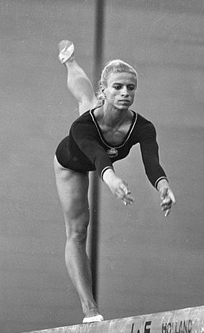

Elena Ceampelea (ROM)
1964 and 1972 Olympian
1971 Balkan AA Champion

Elena was born on March 3, 1947, in Ploiesti, Romania, the oldest of 10 children. She began gymnastics at the age of 12 and made rapid progress. She became a member of the national team in 1963 and represented Romania
in numerous competitions until her retirement from competitive gymnastics in 1974. She worked as a coach and a judge until 2015. She currently lives in Bucharest.
Competition Results
1964
Olympic Games: 6th Team, 37th AA
1965
European Championships: 16th AA, 5th B
1966
ROM-GDR Dual Meet: 1st Team, 1st AA
World Championships: 28th AA
1967
European Championships: 17th AA, 6th FX
GDR-ROM Dual Meet: 2nd Team, 4th AA
1968
BUL-ROM Dual Meet: 2nd Team, 2nd AA
NED-ROM Dual Meet: 1st Team, 1st AA
1969
GDR-ROM Dual Meet: 1st Team, 3rd AA, 1st FX
USSR-GDR-ROM Meet: 3rd Team, 3rd FX, 6th UB, 6th B
1970
CSSR-ROM Dual Meet: 2nd Team, 3rd AA
HUN-ROM Dual Meet: 2nd Team, 1st AA
International Championships of Romania: 2nd AA
Romanian Championships: 1st AA
World Championships: 5th Team, 17th AA
1971
Balkan Championships: 1st Team, 1st AA, 1st UB, 1st B, 1st FX
Dynamo Spartakiade: 8th AA
European Championships: 14th AA, 4th V
Romanian Championships: 1st AA
ROM-HUN Dual Meet: 1st Team, 1st AA
USA-ROM Dual Meet: 1st Team, 1st AA
1972
HUN-ROM Dual Meet: 2nd Team, 2nd AA
International Championships of Romania: 1st AA
NED-ROM Dual Meet: 1st Team, 1st AA
Olympic Games: 6th Team, 22nd AA
Romanian Championships: 2nd AA
Romanian Gymnastics Trophy: 3rd AA
1973
CSSR-ROM Dual Meet: 2nd Team, 5th AA
HUN-ROM Dual Meet: 1st Team, 2nd AA
International Championships of Romania: 2nd AA
ROM-USSR Dual Meet: 1st Team, 1st AA
USA-ROM Dual Meet: 1st Team, 2nd AA
1974
ITA-ROM Dual Meet: 1st Team, 3rd AA
ROM-HUN Dual Meet: 2nd Team, 9th AA
World Championships: 4th Team, 29th AA
This page was created on August 13, 2020 and was last updated on June 11, 2026.
© Gymn Forum